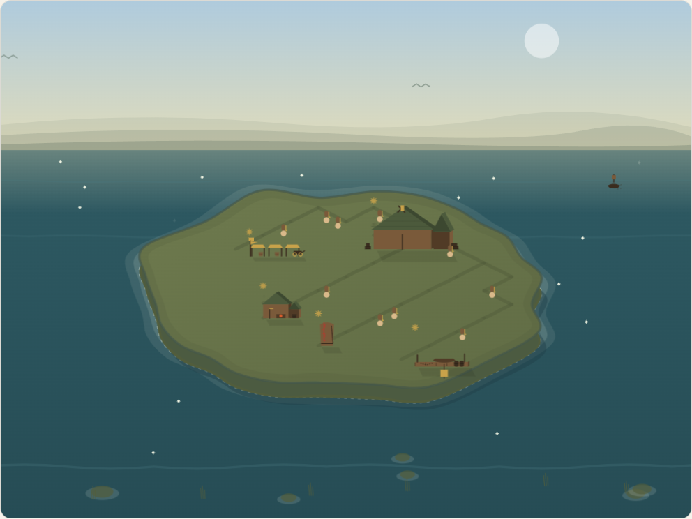

LÄR DIG SVENSKA
Swedish
Learn Swedish.
Build Stockholm.
Five-minute lessons that pay for a city — from a Viking settlement to a city among the stars.
gray0072.github.io/swedish
"gå" in the supine?
jag har
gått
✓ Correct
+10 XP · +5 kr